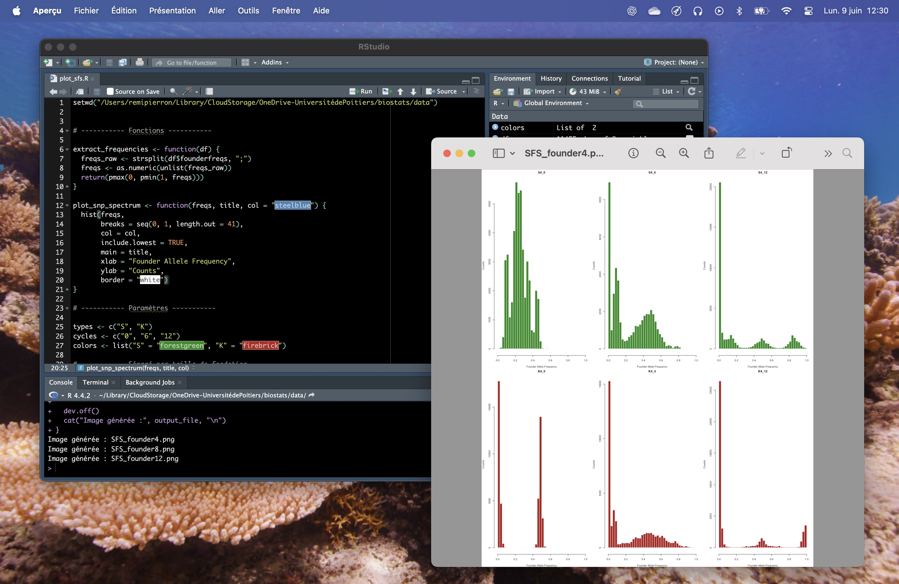

🇦🇹 Projet 2 : étude biostatistique sur l'évolution de l'ADN des levures

Mon travail avait pour but de reproduire une étude biostatistique sur l'évolution de l'ADN des levures, en utilisant des méthodes statistiques avancées. J'ai utilisé le langage R pour effectuer des analyses de données. L'objectif était de comprendre comment les mutations génétiques influencent l'évolution des levures au fil du temps.
La première étape à été de comprendre l'étude originale et les méthodes statistiques utilisées. J'ai ensuite collecté les données nécessaires et j'ai appliqué des techniques de nettoyage et de transformation des données, afin de pouvoir retrouver les résultats de l'étude originale.

J'ai rencontré des difficultés pour reproduire l'étude originale, car les données étaient complexes et nécessitaient une compréhension approfondie des méthodes statistiques utilisées. De plus, j'ai dû m'adapter à des outils et des techniques que je n'avais pas utilisés auparavant.
J'ai acquis des compétences en biostatistique, en analyse de données génétiques et en utilisation avancée du langage R. J'ai également amélioré ma capacité à reproduire des études scientifiques et à comprendre les implications des résultats statistiques dans le contexte de la biologie évolutive.